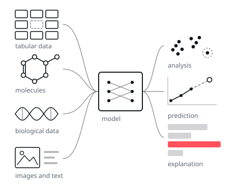

Tabular data
Representations and predictive models for tabular data, including tabular foundation models and in-context learning, with missing values treated as part of the problem rather than a preprocessing step.
We develop machine learning for data that comes from real scientific and industrial problems, and explanations that make a model's decisions legible to the people who act on them.
Part of GMUM at the Faculty of Mathematics and Computer Science, Jagiellonian University, Kraków.

Representations and predictive models for tabular data, including tabular foundation models and in-context learning, with missing values treated as part of the problem rather than a preprocessing step.
Self-supervised and unsupervised representations, few-shot learning, density estimation and anomaly detection, for settings where annotation is expensive or simply unavailable.
Counterfactual explanations, that is the smallest change to an input that flips a decision, and explanations expressed in text and concepts rather than in pixels or parameters.
Chemoinformatics and bioinformatics, where a prediction that is wrong or unintelligible carries a real cost, and where the data rarely looks like a benchmark.
We take doctoral students through the Jagiellonian University doctoral school, and we supervise master's and bachelor's theses in the group's areas. If you want to work on any of the topics above, write with a short description of what interests you and what you have built so far.